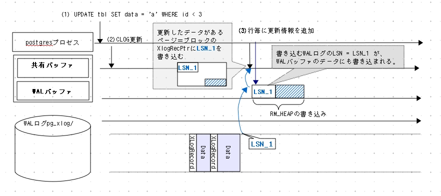
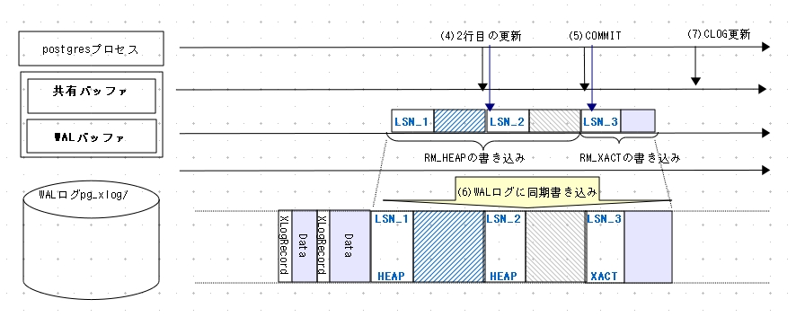
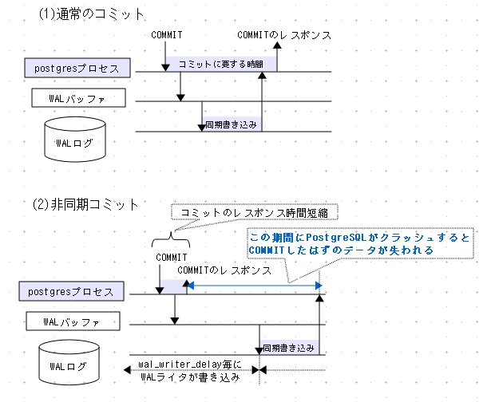

WAL (Write Ahead Logging)
WALが導入された当初の目的は、 サーバのプロセス故障によるメモリ(共有バッファ)とHDDのデータ不一致を解消することにありました。
PostgreSQLは共有バッファ上でデータ操作することで高速なデータアクセスと処理を実現していますが、
障害発生の保険として、
データの変更情報をWALログと呼ぶ16[Mbyte]のファイルに、
シーケンシャルに同期書き込みしていきます。
万が一、共有バッファのデータをデータ領域に書き込む前にサーバプロセスがクラッシュしても、
WALログに記録された更新データを再実行(REDO)することで、
クラッシュ直前の状態にリカバリできます(WALログはREDOログ)。
このように、PostgreSQLはプロセス故障に対し、WALを使ってデータベースの一貫性(consistency)と永続性(durability)を確保します。
|
|
当初はサーバプロセスの故障対策として導入されたWALですが、 WALログを利用してさらに耐障害性と可用性を高める仕組みが導入されました。PITR(Point In Time Recovery)とレプリケーションです。
以降、WALの仕組みを詳細に説明します。PITRとレプリケーションは[<2-10>]と[<2-11>]で説明します。
概略
Outline
WALは複雑な機能なので、一度にすべてを説明するのは困難です。 見通しを良くするため、詳細な説明は後回しにして、ここではいくつかのキーワードと共にWALの書き込みとリカバリの概略を説明します。
PostgreSQLのWALは書籍「トランザクション処理 概念と技法(下)」Jim Gray他(ISBN4-8222-8103-5)にある物理論理ロギング(physiological logging)をほぼ忠実に実装したものです。
この方式はCHECKPOINT毎にリカバリの起点となるブロックデータを物理的にすべて保存し、それ以外は差分データを保存します。
以下、２つのブロックから成るテーブルを例に解説します([<図2-42>])。
- CHECKPOINT開始直後のWALログの位置(LSN)は「REDOポイント」と呼ばれ、リカバリの起点になる。
-
ブロック１にタプルを追加する。ブロック１はCHECKPOINT開始後はじめての追加なのでWALログにはブロック１全体を書き込む。このブロックを「バックアップブロック」という。
WALログには「LSN(Log Sequence Number)」という"番地"が定義されている。 バックアップブロックを書き込むLSNを、共有バッファ上のブロック(ページ)のヘッダ情報にも書き込む(ここではLSN_1)。 この情報はリカバリ時に必要になる。 -
次にまたブロック１にタプルを追加する。
すでにブロック１のバックアップブロックが書き込まれたので、WALログには通常のWALデータ、つまり当該ブロックの差分に相当する追加したタプルの情報だけを書き込む。
なお、共有バッファ上の当該ブロック(ページ)のヘッダにはLSN_2を上書きする。 - 次にブロック２にタプルを追加する。ブロック２はCHECKPOINT開始後はじめての追加なので、ブロック２全体をバックアップブロックとして書き込む。
ここで物理論理ロギングの威力を示すため、 ブロック2に再度タプルを追加している最中にサーバクラッシュし、ブロック2のデータを喪失したと仮定します。
|
|
次にリカバリをみていきます([<図2-43>])。 リカバリするテーブルのブロック1はLSN_2の状態、 ブロック2は書き込み失敗でデータを喪失した状態と仮定します。
- リカバリはREDOポイントを起点として行う。 よって、リカバリ開始後に初めて再実行(REDO)するブロックのWALログは必ずバックアップブロックである。 バックアップブロックはLSNに関わらず無条件で再実行、つまり上書きする。
- 2番目のWALログはブロック１の変更分である。念のためにLSNを比較する。 ブロック1は先の再実行でLSN_1に書換えられ、WALログのそれはLSN_2である。 「LSN_1 < LSN_2」なので、WALログを再実行してブロックをリカバリする。 もしもなんらかの事情でブロック側のLSNがWALログのLSNよりも大きい場合は、 そのWALログを再実行しない([<コラム2-9>])。
- 3番目のWALログはブロック2のバックアップブロックである。 ブロック2は内容が失われているが、バックアップブロックを上書きすることでリカバリできる。
- 以下同様、WALログが尽きるまでリカバリを繰り返す。
コラム2-9:WALログの再実行操作のべき等性 情報工学での「べき等性」とは、「ある操作を1度行っても複数回行っても同じ効果となること」です。
WALログによるリカバリで、バックアップブロックをデータベースクラスタに再実行(REDO)する操作は「べき等である」。 なぜならバックアップブロックを何度上書きしても、当然ながらそのブロックのデータは同じだからです。
他方、通常のWALログは差分データなので、同じWALログを２度３度と再実行したり、WALログの再実行順序が狂ってしまうと、データベースクラスタのデータの一貫性が損なわれます。 つまり通常のWALログの再実行は「べき等でない」。
よって、通常のWALログは「実行順序を守って、必ず一度だけ再実行」するため、当該WALログのLSN_Wとブロック側のLSN_Bを比較し「LSN_B < LSN_W」の時だけ再実行します。
|
|
そもそもリカバリを行うということは、なんらかの故障が発生したということであり、 データベースクラスタのデータも正常に書き込まれたかどうか不明です。 一方、WALログデータはCRC32のエラーチェックもあり、ほぼ完全なデータであると保証できます。 よって、リカバリはWALログを完全に信頼するという前提で行われます。
上記のリカバリプロセスを要約すると、次のようになります。
「信頼できるブロックを上書きしてそのブロックの時間をCHECKPOINT直後にまで巻き戻し、 それを各ブロックのリカバリの出発点とする。
その後は信頼できる差分データを正しい順序で次々に再実行(REDO)しながら、 クラッシュ直前の状態までリカバリしていく」。
ここまで、WALログの書き込みとリカバリの関係について簡単に説明しました。
以降、
ここで説明したことがらを基に、次に記す項目について詳細に解説します。
- WALログの論理構造 LSNとはなにか、WALログファイルとの関係など
- WALログに書き込むデータ バックアップブロック、通常のWALログのデータ構造など
- WALログの書き込みシーケンス
- CHECKPOINTとリカバリ WALログの視点からみたCHECKPOINTとリカバリの詳細
最後にWALログ書き込みに関する様々な機能についてまとめて解説します。
WALログの論理構造
Logical structure of WAL segment
WALの情報は(tli, xlogid, xrecoff)の3組の数値で管理します。各データの詳細を以下に示します。
| データ名 | 説明 | バイト長[byte] |
|---|---|---|
| tli | TimeLineID(タイムラインId) | 4 |
| xlogid | ログID | 4 |
| xrecoff | ログID毎のオフセット | 4 |
xlogidとxrecoffの組を「LSN(Log Sequence Number)」と呼びます。TimeLineIdは[<2-10>]で説明します。
WALログの論理的な構造を示します([<図2-44>])。
図中、0xF*E*FFFFFF の"E"の部分を青にしていますが、書籍では黒文字でお願いします。 これは、作図で間違わないよう、注意するために青にしています。|
|
WALログは、論理的にはxlogid毎に約4[Gbyte]の領域が確保されています([<脚注26>])。
xlogidも4[byte]=32[bit]=42億強の値を持つことができます。
よって実用的には無限大の領域が確保されているといってよいでしょう。
WALログが確保する広大な領域に、PostgreSQLで行われるすべてのデータ処理が保存されていくのです。
footnote 26 より正確には、末尾の16[Mbyte]を除いた(4[Gbyte]-16[Mbyte])、特にxlogid=0の場合は先頭の16[Mbyte]も除いた4[Gbyte]-32[Mbyte]です。 なお、xlogid=0の先頭16[Mybte]不使用はバージョン9.0からです。バージョン8.4まではxlogid=0の先頭部分も使用していました。
ただし、実用上は4[Gbyte]のファイルすら扱うのは難しいので、16[Mbyte]のセグメント毎にファイル化して利用します。
ファイルの命名規則は次のとおりです。
ファイル名 = TimeLineID + xlogid + (00000000 から 000000FE までのシーケンシャルな番号)
WALログのアドレス指定はLSNで行いますが、LSNからそのLSNを含むセグメントを知ることも容易です。
例えばTimeLineID=1、LSNが(xlogid=0, xrecoff=0x14FBD68=22003048)の場合、((22003048 -1)/16[Mbyte]) = 1なので、ファイル名は"00000001 00000000 00000001"となります。
図示すると以下のようになります。
 |
WALログに書き込むデータ
WALログとして書き込むデータを説明します。 はじめにWALログの内部構造を示します([<図2-46>])。
|
|
16[Mbyte]のWALログの内部は、8192[byte]のページに分割されています。 最初のページの先頭部分には XLogLongPageHeaderData 構造体で定義されたページ情報が、
2ページ目以降の各ページの先頭部分には XLogPageHeaderData 構造体で定義されたページ情報が、それぞれ保存されています。ページ内部は XLogRecord と実際のデータの組から成ります。
XLogRecord
XLogRecord構造体で重要な項目を説明します。
A XLogRecord structure explains an important item.
| データ項目 | 説明 |
|---|---|
| xl_crc | データ本体のCRC誤り訂正コード |
| xl_prev | このWALログ情報の１つ手前のWALログ情報のLSN値 |
| xl_xid | このWALログを書き込んだトランザクションのXID |
| xl_tot_len | XLogRecord構造体とデータ本体の長さ |
| xl_len | データ本体の長さ |
| xl_rmid | リソースマネージャ(ResourceManager)の種類 |
| xl_info | リソースマネージャ(ResourceManager)の操作コード |
ここでリソースマネージャ(ResourceManager)とは、WAL関連の操作を機能的に分割したもので、 バージョンが進むにつれて増えていきました。 バージョン9.2では以下のリソースマネージャがあります。
| 機能 | リソースマネージャ |
|---|---|
| ヒープタプル操作 | RM_HEAP2, RM_HEAP |
| インデックス操作 | RM_BTREE、RM_HASH、RM_GIN、RM_GIST、RM_SPGIST |
| シーケンス操作 | RM_SEQ |
| トランザクション関係 | RM_XACT、RM_MULTIXACT、RM_CLOG、RM_XLOG |
| DBやテーブルスペースなどの操作 | RM_SMGR、RM_DBASE、RM_TBLSPC、RM_RELMAP |
| ホットスタンバイ用 | RM_STANDBY |
例えばINSERTやUPDATEでタプル追加した場合は、 リソースマネージャRM_HEAPの操作オペレーションXLOG_HEAP_INSERTやXLOG_HEAP_UPDATEが、 COMMITはリソースマネージャRM_XACTの操作オペレーションXLOG_XACT_COMMITが、 それぞれWALログデータをWALバッファに書き込みます。
データ部
前記のように、データ本体は操作オペレーション毎に異なります。代表的な例としてINSERTとUPDATEを説明します。
INSERTの場合、各レコードの更新毎に[<図2-47>]に示すデータをWALバッファに書き込みます。
|
|
ブロックにタプルを追記してから、WALバッファにXLogRecordとxl_heap_insert、および追記したタプルを(一部データを削除して)書き込みます([<コラム2-10>])。 その後、タプルを追記したブロックのXLogRecPtrに(WALログを書き込んだ)LSNを書きます。
コラム2-10:HeapTupleFieldsを削除する理由 WALバッファに書き込む際に削除するHeapTupleFieldsには、t_min、t_maxなど同時実行制御に必須のデータが含まれています。 INSERTやUPDATEのWALログはこのフィールドを削除して保存しますが、その理由は 構造体xl_heap_headerのコメント に書かれています[<脚注27>]。
意訳すると「リカバリ時にWALログヘッダのXIDを使えば、HeapTupleFieldsのデータは再構築できるので、WALログサイズ小さくするため削除する」。実際、タプルヘッダHeapTupleHeaderDataは26バイトなので、そこからHeapTupleFieldsの12バイト削減するとWALログ全体のサイズ圧縮に多少なりとも効果があります。
脚注27 構造体xl_heap_headerの定義はsrc/include/access/htup.h。
xl_heap_insert には対象となるリレーション(テーブル)node、挿入するタプルの位置(tid)などの情報を持っています。
UPDATEもほぼ同様ですが、データの先頭部分の xl_heap_update 構造体には削除(無効化)するタプルと新たに追加するタプル、計２つのタプル情報を持ちます。
INSERTやUPDATEなどデータ操作コマンド以外でもWALログを書き込みます 例えばCOMMITでは閉じたトランザクションのXIDなどを書き込みます。 CHECKPOINTでは構造体CheckPoint([<脚注28>])で定義されたデータを保存します(リカバリの説明で改めて説明する)。
脚注28 構造体CheckPointの定義はsrc/include/catalog/pg_control.h。
バックアップブロックの構造
バックアップブロックの構造を示します([<図2-48>])。
|
|
バックアップブロックはXLogRecordの次に構造体
BkpBlock
のデータ、
次いで空白(hole)を除いたブロック内の全データを連結したものです。
構造体BkpBlockにはこのブロックを持つテーブルの情報と、このブロックの位置、およびholeの位置と長さを記録します。
WALログの書き込みシーケンス
具体的な操作でWALの書き込みシーケンスを説明します([<図2-49>])。
テーブルtblの2レコードを更新したとします。
以下は書籍編集用のデータ。書籍では図のように配置、色付け
exec_simple_query() @postgres.c ----(1)
ExtendCLOG() @clog.c <-- CLOGに"IN_PROGRES"書き込み ----(2)
heap_update()@heapam.c <-- 1レコード目更新
XLogInsert() @xlog.c <-- WALログバッファに書き込み ----(3)
WALログ書き込みのLSNを更新ページに書き込む
heap_update()@heapam.c <-- 2レコード目更新
XLogInsert() @xlog.c <-- WALログバッファに書き込み ----(4)
WALログ書き込みのLSNを更新ページに書き込む
finish_xact_command() @postgres.c <-- commit処理
XLogInsert() @xlog.c <-- WALログバッファに書き込み ----(5)
CommitTransaction()@xact.c
XLogFlush() @xlog.c
XLogWrite() @xlog.c <-- WALログに書き込み ----(6)
issue_xlog_fsync() @xlog.c <-- 同期書き込みfsync() || fdatasync()実行
TransactionIdSetTreeStatus() @transam.c
TransactionIdCommitTree() @transam.c <-- CLOGに"COMMITTED"書き込み ----(7)
|
|
(1)UPDATE文を実行する
クライアントがUPDATEを実行します。
(2)CLOGを更新する
1レコード目の更新に先立ち、CLOGを更新します。具体的にはこのXIDの状態を"IN_PROGRESS"に設定します。
(3)1レコード目の更新データをWALバッファに書き込む
1レコード目のタプルをブロック(正確には共有バッファ上のページ)に追加した直後、 その更新情報を関数XLogInsert()でWALバッファに書き込みます。
図を使って少し詳しく説明します([<図2-50>])。
リソースマネージャRM_HEAPがWALバッファに更新データを書き込みます。 書き込み位置は、図の例ではLSN_1です。 次に、この更新データの書き込み位置LSN_1を、 更新したタプルを含むブロックのXLogRecPtrに書き込みます。
[<図2-50>]UPDATE文の実行シーケンス(1) 
(4)2レコード目についても同様に処理する
以降の説明は[<図2-51>]を参照してください。
(5)COMMITに関するWALログをWALバッファに書き込む
リソースマネージャRM_XACTがCOMMITに関するデータをWALバッファに書き込みます。
(6)WALログに同期書き込みする
COMMIT後、WALバッファのデータをWALログに同期書き込みします。
[<図2-51>]UPDATE文の実行シーケンス(2) 
(7)CLOGを更新する
トランザクションがCOMMITしたので、CLOGに"COMMITTED"を書き込みます。
念のため付記すると、トランザクションがCLOGに書き込んだデータは、 VACUUM処理が削除するまでCLOGに残っています。
WALログの書き込みタイミングと注意点
ここまで、COMMIT時のWALログ書き込みに注目して説明してきました。 しかしWALログ書き込みのタイミングは他にもあります。 以下に書き込みタイミングを列挙します。
- 実行中のトランザクションのどれかがCOMMITされたとき
- WALバッファがあふれたとき
- CHECKPOINT、VACUUM実行時
- (後述する)WALライタが作動したとき
ここで、COMMIT時の書き込みに関する注意点を述べます。
- 複数トランザクション
- 検索系SQL
複数のトランザクションが走っている場合、
ひとつのトランザクションがCOMMITすればWALバッファのデータはすべてWALログに同期書き込みされます。
書き込まれたWALログの中にはまだCOMMITしてないトランザクションのWALデータが存在する場合もあります。
「WALログに書き込まれるのはCOMMIT済みのデータだけではない」ので注意してください。
通常はINSERTやUPDATE、DELETEなど更新系のSQLがWALログを書き込みます。
しかし状況によってはSELECT文など検索系SQLでもWALログの書き込みがあります。
例えば、
SELECT文実行中にHOT([<2-08>])による不要なタプルの削除と並べ替えが発生すると、
WALログ書き込みが行われます。
CHECKPOINTとリカバリ
CHECKPOINTは[<2-05>]で解説しましたが、ここではWALログ書き込みとリカバリの観点から改めて解説します。
CHECKPOINTの詳細
CHECKPOINTの実行シーケンスと、保存するデータについて説明します。
|
|
(1) CHECKPOINT開始
CHECKPOINT開始時のWALログのLSNを"REDOポイント"としてメモリ上に記憶します。 そして共有バッファのdirtyページをHDDに書き出します。
PostgreSQLのCHECKPOINTは"Fuzzy Checkpoint"(非ブロッキングチェックポイント)で、他の処理と並行して行います。 よって、CHECKPOINTの開始時と終了時の間に、他のプロセスによってページが更新されることもあります。
(2) CHECKPOINT実行終了
CHECKPOINT情報をWALログに書き込みます。書き込むデータは 構造体CheckPoint に定義されています[<脚注28>]。
いくつか項目がありますが、リカバリの説明に必要なものを以下に示します。
項目 説明 REDOポイント CHECKPOINT開始時に記憶したREDOポイントを書き込む Timeline [<2-10>]を参照 Next XID CHECKPOINT終了時点での、次のトランザクションに割り振るXIDを書き込む
(3) pg_controlファイル更新
pg_controlファイルを更新します。このファイルはリカバリの出発点となる非常に重要なファイルです。 このファイルが壊れたら、リカバリできなくなります。
pg_controlファイルは、各種データのバージョン番号など、全部で34項目のデータをもちます。 ここではリカバリの説明に必要な以下の項目のみ示します。
項目 説明 status データベースの状態 Latest checkpoint location 最新のCHECKPOINT情報を書き込んだWALログのLSN Prior checkpoint location ひとつ前のCHECKPOINT情報を書き込んだWALログのLSN
pg_controlファイルはデータベースクラスタのサブディレクトリglobal下にあり、pg_controldataコマンドで内容を表示できます。
postgres> pg_controldata /usr/local/pgsql/data pg_control version number: 903 Catalog version number: 201105231 Database system identifier: 5727008483010673663 Database cluster state: in production pg_control last modified: Fri May 11 02:33:11 2012 Latest checkpoint location: 1/59009AF0 Prior checkpoint location: 1/59009A70 Latest checkpoint's REDO location: 1/59009AC0 Latest checkpoint's TimeLineID: 2 Latest checkpoint's NextXID: 0/1073742230 ... 略 ...
リカバリ
次に、リカバリ処理を説明します。
|
|
(1)サーバ再起動時、pg_controlファイルを読み込む
statusが異常終了("in production")ならば、以降のリカバリシーケンスを実行します。 正常終了("shut down")の場合は通常の起動シーケンスを実行します。
(2)WALログからCHECKPOINT情報を読み出す
pg_controlファイルからCHECKPOINTロケーション(Latest checkpoint location)を求め、 WALログからCHECKPOINT情報を読み出します。
もしもLatest checkpoint locationのデータが壊れていたら、 Prior checkpoint location(一つ手前)のWALログデータを読み出します。
どちらも読み出せなかったらリカバリは失敗します。
(3)REDOポイントからWALログのデータを読み出してリカバリする
CHECKPOINT情報で得たREDOポイントから、WALログを順次取り出します。
WALログのXLogRecordにはリソースマネージャが記述されているので、 そのリソースマネージャにデータを渡し、決められた操作でリカバリを行います。
例えば、UPDATE文ならリソースマネージャHeapがデータを読み出して指定されたブロックの更新を行います。
概要でも触れましたが、バックアップブロックは無条件で上書きし、通常のWALログは該当ブロックのLSNと比較し、WALログのLSNが大きい場合にリカバリ(REDO)します。
なお、WALログを読み出す際、 XLogRecordのXIDと先に読み出したNextXIDを比較し、 もしも今読み出したWALログデータのXIDのほうが大きい場合は、 保存してあるNextXIDの値を今読み出したXID+1に書き換えます。 このようにして、データベースクラスタ内部でリカバリ後にXIDが重複することを避けます。
トランザクションの不定性
ここで、リカバリ後のトランザクションの不定性について述べます。
COMMITのレスポンスを返す直前にPostgreSQLがクラッシュした状況を考えます。
このようなクリティカルな故障に関し、
WALの書き込みに着目すると[<図2-54>]に示す2つのパターンがありますが、
どちらのパターンもリカバリ後のデータベースクラスタの
一貫性(consistency)と永続性(durability)は保たれます。
|
|
(1)WALログ書き込み前にクラッシュ
リカバリ後、このトランザクションはABORTしたようにみえる。(2)WALログ書き込み後にクラッシュ
このトランザクションはCOMMITしている。 HDDに(同期)書き込みが完了したWALログはリカバリ時に再実行(REDO)され、データロストは発生しない。
一方、ユーザやアプリケーションから見ると、
COMMITのレスポンスが無かったのでトランザクションの結果は不定です。
よってリカバリ後に作業を再開する場合は、
まず最初にそのトランザクションがCOMMITされたのかABORTされたのかを確認しなければなりません。
もし、COMMITしているにも関わらずリカバリ後に再度データ更新すると、
その操作が"べき等でない"場合はデータベースの論理的一貫性が損なわれる可能性があります。
DBの説明でよく使われる銀行を例にすると、「同じ金額を2度振り込む」ことになるわけです。
(PostgreSQLに限らず)一般的なRDBMSは、 データベースの物理的な一貫性と永続性しか保証しません。 よって、このようなクリティカルな故障における論理レベルの一貫性は、 ユーザやアプリケーションが確保しなければなりません。
同様の問題はレプリケーションのマスタ故障でも発生します。 対策などの詳細は[<3-23>]で解説しています。
WALログ書き込みに関する機能
WALログ書き込みに関するいくつかの機能を紹介します。
遅延コミット(Commit Delay)
遅延コミット(commit_delay)とは、 設定パラメータcommit_delayに設定した時間だけCOMMITを待ち、 複数のトランザクションのCOMMITを一度に行うことで、 特にWALログのHDDへの(同期)書き込み回数を減らす仕組みです。
遅延コミットは常に遅延するのではなく、設定パラメータcommit_siblings個以上のトランザクションが走っているときにcommit_delayだけCOMMITを待ちます。 同時に走っているトランザクションがcommit_siblings個未満の場合は遅延しないで即座にCOMMITします。
遅延コミットが機能した場合、ひとつのトランザクションに着目すれば最悪でcommit_delay時間だけCOMMITが遅延します(レスポンスが遅れる)が、 サーバの総スループットは向上する可能性があります。
|
|
WALライタと非同期コミット
WALライタは周期的にWALバッファを監視し、まだ書き込まれていないWALバッファ上のWALログをHDDに(同期)書き込みするプロセスです。デフォルトで稼働しています。
監視周期は設定パラメータwal_writer_delayで設定し、デフォルト値は200[ミリ秒]です。
非同期コミットとは、WALログをWALバッファに書き込むだけでHDDへの(同期)書き込みを省き、WALログ書き込みによる性能低下を防ぐ機構です。
[<図2-49>]を例に具体的に述べると、関数XLogFlush()から同期書き込み(XLogWrite()とfsync())までの一連の処理を省略し、
WALバッファのデータ書き込みはWALライタに任せます。
念のため、通常のコミットと非同期コミットについて、WALバッファとWALログの書き込みの観点からまとめた図を示します([<図2-56>])。
|
 |
図から明らかなように、
COMMITのレスポンス時間は短縮されますが、
WALライタがHDDに書き込む前にPostgreSQLサーバがクラッシュすると、COMMITしたデータが失われます。
このように、非同期コミットは耐障害性を犠牲にして処理速度を確保する機能なので、通常は使うべきでありません。
参考文献
- LOCK関連とWALのボトルネックに関する議論 by 堀川隆氏
- http://bit.ly/HWy6ya
- http://bit.ly/ISbxVN
- pgbenchによるEarly Lock Releaseの評価 by 堀川隆氏
- http://bit.ly/V37jWS
WALログ書き込みのボトルネックに関する講演。資料内の参考文献も参考になります。